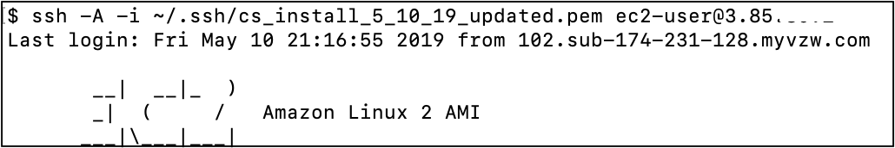

SSH to Master Nodes via Bastion Host
Securely Connect to a Critical Stack Master Node running in a Private VPC
Overview
The Critical Stack master nodes are not located on a public subnet. If you need to access the nodes you will first need to create a bastion host. This guide will help explain how to securely access these environments without uploading private keys to the secondary nodes.
Prerequisities
- A Critical Stack cluster deployed using the installer in an external AWS account and the cluster private key (.pem) locally saved.
- You will need access to the AWS account where Critical Stack was installed and privilages to create EC2 instances and Security Groups
- These instructions assume you will be connecting from a Mac/Linux terminal. If you are connecting from a Windows client it is recommended you setup SSH key forwarding so that you do not have to copy the private key to a secondary host.
Getting Started
Create a bastion host
Log in to your AWS Console.
From the AWS Management Console, search for EC2
Create an EC2 instance on AWS in the same account and datacenter as the CS deployment. From the AWS EC2 Console select Launch Instance.
Choose t2.micro sized instance from the one of the Linux based AMIs since they are on the free-tier and you will only use this instance to connect to the master node.
Select Configure Instance from the top navigation. For Network choose the Critical Stack VPC. For Subnet, select one of the public subnets. You can leave all of the other default values on this page.
Select Configure Security Group from the top navigation.
Create a new security group to allow SSH traffic over TCP on port 22. If you choose Anywhere, all IP addresses will have access to your instance (narrow this to an IP address range only you will be using for better security). Click on Review and Launch.

Select Launch on the Review Instance Launch page
Select Choose and existing key pair and
from the Select a key pair drop down list. This is the private key from the Critical Stack cluster. Acknowledge you have the key and select Launch. Select View Instances to to back to the AWS Console and view the EC2 Instances.
Identify the Public IP of the bastion host and the Private IP of the master node.
Connect to your hosts
Open a terminal window.
Configure SSH Agent Forwarding by adding the Critical Stack cluster private key to your local SSH agent. This will allow you to pass the cluster private key to the master node after you are connected to the bastion host (thereby eliminating the need to copy the private key to your bastion host).
ssh-add -K <clusterprivatekey>SSH to your bastion host using the -A flag to to forward the key.
ssh -A -i ~/.ssh/<your_cluster_private_key>.pem ec2-user@<bastion_host_public_IP>
From the bastion host, ssh into the master node. Identify the master node IP from the AWS EC2 Console. The master nodes will be prefixed with CS-Cluster- (case significant). Note worker nodes will be all lower case, cs-cluster-. Since we are passing the cluster private key through SSH forwarding you will only need to know the Critical Stack user csos.
ssh csos@<master_node_private_IP>